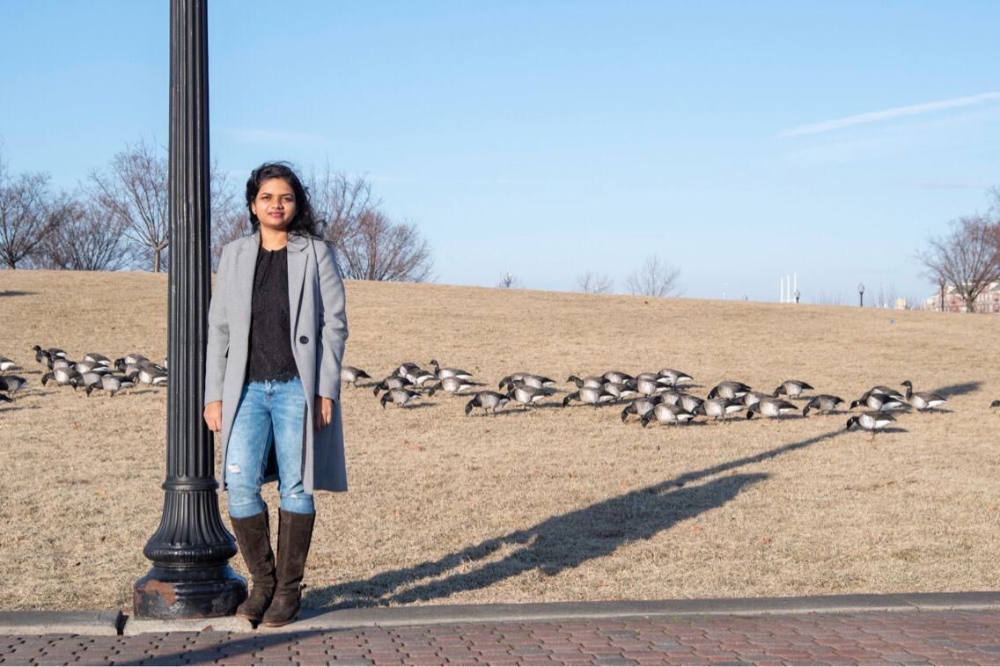

Senior Software Engineer| New York, NY | sneharaoavula@gmail.com
Hi, I'm Sneha, a passionate software engineer and tech enthusiast based in New York. With a strong background in building and optimizing complex software solutions, I specialize in system integration, SaaS platforms, and delivering end-to-end technical solutions. Over the years, I’ve led projects in diverse industries, driving innovations and optimizing systems to ensure seamless user experiences. In my professional journey, I've worked extensively with technologies like Java, Spring, and SaaS frameworks to develop scalable applications and streamline processes. My expertise extends to building secure, efficient systems, improving customer interactions, and implementing high-performance solutions. Whether it’s collaborating with cross-functional teams or designing robust architecture, I strive to create impactful, lasting results. Beyond my professional life, I’m an avid reader and the host of a local book club in New York. I enjoy exploring a variety of genres, from thought-provoking fiction to compelling non-fiction, and love engaging with fellow readers in lively discussions. When I'm not reading or working, you'll often find me on a day hike, soaking in the natural beauty of the outdoors. Hiking gives me the space to recharge and find inspiration for both my personal and professional endeavors. I’m also a passionate cook—whether it's experimenting with new recipes or perfecting old favorites, I love spending time in the kitchen and sharing meals with family and friends. If you’re interested in connecting, sharing book recommendations, or chatting about tech or hiking, feel free to reach out!
